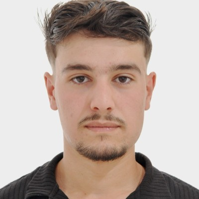

Futur étudiant en Master Data Science · Passionné par l'analyse de données, le machine learning et l'intelligence artificielle · Basé à Angers, France.

Je suis Mayas Khemri, étudiant en troisième année de Licence Informatique à l'Université d'Angers, et futur étudiant en Master Data Science à la rentrée 2026.
Né en Algérie, j'ai obtenu mon baccalauréat Mathématiques avec mention Très Bien (16,54/20) avant de rejoindre la France pour poursuivre mes études. Ce parcours m'a appris l'autonomie, l'adaptabilité et la persévérance.
Passionné par la donnée sous toutes ses formes — de l'analyse exploratoire au deep learning — je cherche à mettre mes compétences au service de projets à fort impact. Je suis particulièrement attiré par les domaines de la finance, des télécoms et de la santé.
En dehors du code, je m'engage dans des actions de solidarité avec Angers ZéroDéchet et la Banque Alimentaire, parce que la tech doit aussi servir la société.
L3 Informatique → Master Data Science · 2026
Python · SQL · Power BI · Machine Learning · Deep Learning
Projet de recherche au Laboratoire LERIA (Univ. Angers), encadré par M. Benoît Da Mota. Détection automatique du rythme dans des vidéos via Optical Flow & Deep Learning (RAFT). Exploration et comparaison d'approches : optical flow dense/sparse, pose estimation, depth estimation. Évaluation de modèles MediaPipe, OpenPose, RAFT, MiDaS.
Conception d'un projet de bout en bout prédisant le risque de résiliation client (télécoms). Nettoyage des données, feature engineering (charges par mois), et entraînement de modèles de classification. Sélection automatique de la Régression Logistique après une validation croisée rigoureuse. Développement d'une interface Streamlit interactive pour simuler et prédire des profils clients en temps réel.
Projet ML en L3 visant à reconnaître différentes catégories d'images couleur 32×32. Comparaison de plusieurs approches : k-NN, régression logistique et CNN. Implémentation d'un CNN PyTorch avec BatchNorm, Dropout, augmentation de données, early stopping et scheduler de learning rate.
Pipeline complet de bout en bout : extraction depuis PostgreSQL, nettoyage et structuration des données sous Python/Pandas, puis conception de tableaux de bord interactifs Power BI pour l'aide à la décision. Indicateurs pensés pour des profils non techniques.
Disponible pour une alternance dès septembre 2026.
Angers / Paris / Remote.